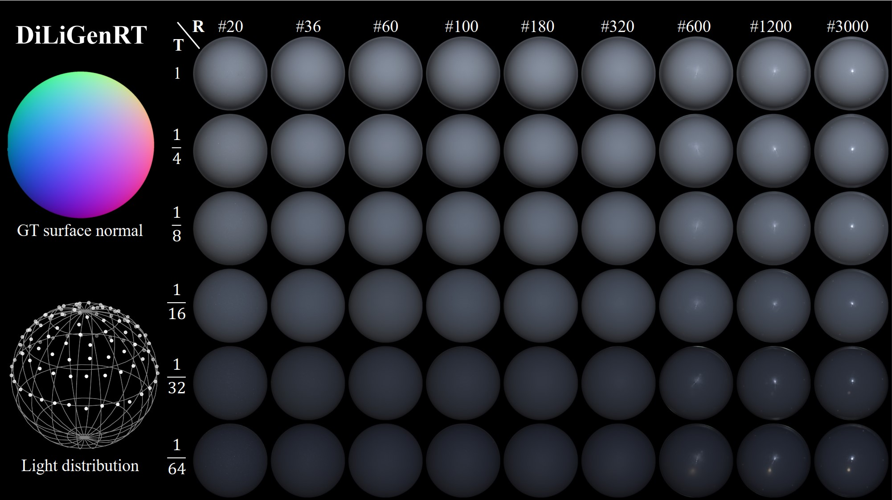

Heng Guo 郭亨
Specially Appointed Researcher （特聘研究员）
PRIS Lab, School of Artificial Intelligence
Beijing University of Posts and Telecommunications
Email: guoheng [at] bupt.edu.cn
[GITHUB] [CV] [简历] [Google Scholar]
➤ Join Us at BUPTAbout Me
I received my Ph.D. (Oct. 2018 - Mar. 2022) from Osaka University under the supervision of Prof. Yasuyuki Matsushita and Prof. Boxin Shi. Previously, I obtained my Master and Bachelor degrees in 2018 and 2015 from UESTC, supervised by Prof. Bing Zeng and Prof. Shuaicheng Liu. My research interests include computational photography and computer vision.
News
- [2025/11] One paper is accepted by TIP 2025!
- [2025/11] One paper is accepted by AAAI 2025!
- [2025/11] One paper is accepted by WACV 2025!
- [2025/09] One paper is accepted by NeurIPS 2025!
- [2025/08] One paper is accepted by TMM!
- [2025/06] Three papers are accepted by ICCV 2025!
- [2025/02] Three papers are accepted by CVPR 2025!
Publications
 |
FourierSR: A Fourier Token-based Plugin for Efficient Image Super-Resolution Wenjie Li, Heng Guo#, Yuefeng Hou, Zhanyu Ma TIP 2025 [Paper] [Code] |
 |
Seeing Through the Rain: Resolving High-Frequency Conflicts in Deraining and Super-Resolution via Diffusion Guidance Wenjie Li, Jinglei Shi, Jin Han, Heng Guo#, Zhanyu Ma AAAI 2025 [Paper] [Code] |
 |
SpecGen: Neural Spectral BRDF Generation via Spectral-Spatial Tri-plane Aggregation Zhenyu Jin, Wenjie Li, Zhanyu Ma, Heng Guo# WACV 2026 [Paper] [Code] |
|
Self-Supervised Selective-Guided Diffusion Model for Old-Photo Face Restoration Wenjie Li, Xiangyi Wang, Heng Guo#, Guangwei Gao, Zhanyu Ma NeurIPS 2025 [Paper] [Project Page] |
|
 |
PolarAnything: Diffusion-based Polarimetric Image Synthesis Kailong Zhang, Youwei Lyu, Heng Guo#, Si Li, Zhanyu Ma, Boxin Shi ICCV 2025 (Highlight) [Paper] [Code][Project Page] |
|
PolGS: Polarimetric Gaussian Splatting for Fast Reflective Surface Reconstruction Yufei Han, Bowen Tie, Heng Guo#, Youwei Lyu, Si Li#, Boxin Shi, Yunpeng Jia, Zhanyu Ma ICCV 2025 [Paper] [Code][Project Page] |
|
|
Polarimetric Neural Field with Unified Complex-Valued Wavefunction Chu Zhou, Yixin Yang, Junda Liao, Heng Guo, Boxin Shi, Imari Sato ICCV 2025 [Paper] [Supp] [Code] |
|
|
PMNI: Pose-free Multi-view Normal Integration for Reflective and Textureless Surface Reconstruction Mingzhi Pei, Xu Cao, Xiangyi Wang, Heng Guo#, Zhanyu Ma CVPR 2025 [Paper] [Code] [Video] |
|
|
PIDSR: Complementary Polarized Image Demosaicing and Super-Resolution Shuangfan Zhou, Chu Zhou, Youwei Lyu, Heng Guo#, Zhanyu Ma, Boxin Shi, Imari Sato CVPR 2025 [Paper] [Code] |
|
|
MFogHub: Bridging Multi-Regional and Multi-Satellite Data for Global Marine Fog Detection and Forecasting Mengqiu Xu, Kaixin Chen, Heng Guo, Yixiang Huang, Ming Wu, Zhenwei Shi, Chuang Zhang, Jun Guo CVPR 2025 [Dataset] [Code] |
|
|
SfPUEL: Shape from Polarization under Unknown Environment Youwei Lyu*, Heng Guo*, Kailong Zhang, Si Li, Boxin Shi NeurIPS 2024 [Paper] [Project page] [Code] |
|
|
Efficient Face Super-Resolution via Wavelet-Based Feature Enhancement Network Li Wenjie, Heng Guo#, Xuannan Liu, Kongming Liang, Jiani Hu, Zhanyu Ma, Jun Guo ACM MM 2024 [Paper] [Code] |
|
|  |
DiLiGenRT: A Photometric Stereo Dataset with Quantified Roughness and Translucency Heng Guo*, Jieji Ren*, Feishi Wang*, Mingjun Ren, Boxin Shi, Yasuyuki Matsushita CVPR 2024 [Paper] [Project page] |
|
NeRSP: Neural 3D Reconstruction for Reflective Objects with Sparse Polarized Images Yufei Han, Heng Guo#, Koki Fukai, Hiroaki Santo, Boxin Shi, Fumio Okura, Zhanyu Ma, Yunpeng Jia CVPR 2024 [Paper] [Project page] [Code] |
|
 |
ReLeaPS: Reinforcement Learning-based Illumination Planning for Generalized Photometric Stereo Jun Hoong Chan, Bohan Yu, Heng Guo, Jieji Ren, Zongqing Lu, Boxin Shi ICCV 2023 [Paper] [Project page] |
 |
DiLiGenT-Pi: Photometric Stereo for Planar Surfaces with Rich Details Benchmark Dataset and Beyond Feishi Wang*, Jieji Ren*, Heng Guo*, Mingjun Ren, Boxin Shi ICCV 2023 [Paper] [Project page] |
 |
Near-light Photometric Stereo with Symmetric Lights Lilika Makabe, Heng Guo, Hiroaki Santo, Fumio Okura, Yasuyuki Matsushita ICCP 2023 [Paper] [Supp] |
|
Learning to Synthesize Photorealistic Dual-pixel Images from RGBD frames Feiran Li*, Heng Guo*, Hiroaki Santo, Fumio Okura, Yasuyuki Matsushita ICCP 2023 [Paper] [Code and dataset] |
|
 |
Neural BRDF Plugin for Unsupervised Photometric Stereo Heng Guo, Boxin Shi, Yasuyuki Matsushita IC-NIDC 2023 [Paper] [Award] |
 |
Non-Lambertian Multispectral Photometric Stereo via Spectral Reflectance Decomposition Jipeng Lv, Heng Guo#, Guanying Chen, Jinxiu Liang, Boxin Shi IJCAI 2023 [Paper] [Code and dataset] |
 |
Edge-preserving Near-light Photometric Stereo with Neural Surfaces Heng Guo, Hiroaki Santo, Boxin Shi, Yasuyuki Matsushita TPAMI 2022 (Pre-print) [Paper] [Code] |
 |
Multispectral Photometric Stereo for Spatially-Varying Spectral Reflectances Heng Guo, Fumio Okura, Boxin Shi, Takuya Funatomi, Yasuhiro Mukaigawa, Yasuyuki Matsushita IJCV 2022 [Paper] [Video] [Dataset] |
 |
Patch-based Uncalibrated Photometric Stereo under Natural Illumination Heng Guo, Zhipeng Mo, Boxin Shi, Feng Lu, Sai-Kit Yeung, Ping Tan, Yasuyuki Matsushita TPAMI 2021 [Paper] |
|
Multispectral Photometric Stereo for Spatially-Varying Spectral Reflectances: A Well-Posed Problem? Heng Guo, Fumio Okura, Boxin Shi, Takuya Funatomi, Yasuhiro Mukaigawa, Yasuyuki Matsushita CVPR 2021 [Paper] [Video] [Code] |
|
 |
Self-calibrating Near-light Photometric Stereo under Anisotropic Light Emission Heng Guo, Boxin Shi, Michael Waechter, Yasuyuki Matsushita MIRU 2020 (Best Student Paper) [Paper] [Award] |
 |
View-Consistent MeshFlow for Stereoscopic Video Stabilization Heng Guo, Shuaicheng Liu, Shuyuan Zhu, Heng Tao Shen, Bing Zeng IEEE Transactions on Computational Imaging, 2018 [Paper] [Video] |
 |
Joint Bundled Camera Paths for Stereoscopic Video Stabilization Heng Guo, Shuaicheng Liu, Shuyuan Zhu, Bing Zeng ICIP 2016 (Oral) [Paper] |
|
Joint Video Stitching and Stabilization from Moving Cameras Heng Guo, Shuaicheng Liu, Tong He, Shuyuan Zhu, Bing Zeng, Moncef Gabbouj IEEE Transactions on Image Processing, 2016 [Paper] |
{kind=link}
访问量：...